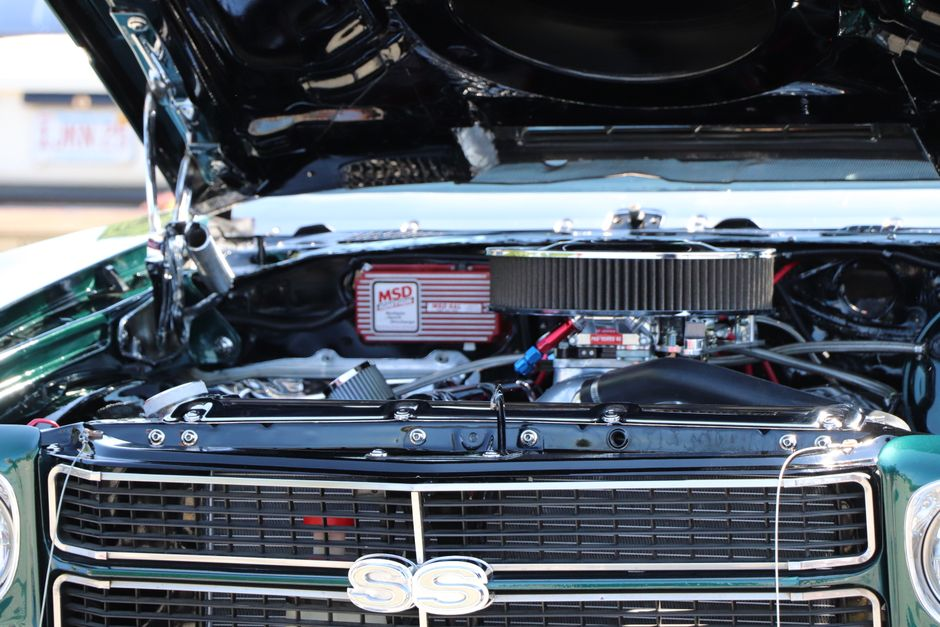

Comment nettoyer et ajuster le système d'allumage pour une performance optimale

Photo: Craig Picariello / Pexels
Nettoyer et ajuster le système d'allumage pour une performance optimale
Comprendre le rôle du système d'allumage
Le système d'allumage d'une voiture joue un rôle crucial dans la performance globale du véhicule. Il est chargé de déclencher l'explosion de l'air et du carburant dans l'admission de chaque cylindre pour générer de l'énergie mécanique. Un système d'allumage bien nettoyé et ajusté peut améliorer l'économie de carburant, réduire les émissions de fumées et augmenter la puissance du moteur.
Étape 1 : Détecter les problèmes potentiels
Avant de procéder au nettoyage et à l'ajustement, il est important de détecter les signes d'un système d'allumage en panne. Les signes de problème courants incluent des accélérations lentes, une augmentation du bruit du moteur, une augmentation de la consommation de carburant, une augmentation des émissions de fumées, et une diminution de la puissance du moteur.
Étape 2 : Nettoyer le capuchon d'allumage
Photo: photim / Pixabay
Le capuchon d'allumage est la pièce qui contient l'électrode qui allume le mélange d'air et de carburant. Il est important de le nettoyer pour garantir qu'il n'y a pas de résistance à l'électricité. Utilisez un gant de cuisine en silicone, un essuie-tout et de l'alcool isopropylique pour nettoyer le capuchon d'allumage.
markdown
Exemple : Supposons que votre capuchon d'allumage soit couvert d'un film de saleté. En utilisant un gant en silicone, nettoyez soigneusement le capuchon. Éliminez toute saleté qui pourrait interférer avec l'émission de la flamme.
Étape 3 : Vérifier l'isolant de pointe
L'isolant de pointe est une pièce qui protège le contact électrique et évite la fuite d'électricité. Il est recommandé de le nettoyer et de le vérifier tous les 30 000 kilomètres. Utilisez de l'alcool isopropylique pour nettoyer l'isolant de pointe.
Étape 4 : Nettoyer et ajuster les capuchons d'allumage
Chaque capuchon d'allumage doit être nettoyé et ajusté pour garantir une alimentation électrique efficace. Utilisez un essuie-tout propre et de l'alcool isopropylique pour nettoyer le capuchon d'allumage. Assurez-vous que le capuchon d'allumage est correctement enfoncé et bien en contact avec l'électrode.
markdown
Scénario : Supposons que vous avez 4 capuchons d'allumage. Nettoyez chaque capuchon avec de l'alcool isopropylique et vérifiez que chaque capuchon est bien en place et en contact avec l'électrode.
Étape 5 : Contrôler la tension du bobinage
La bobine d'allumage est responsable de la production de l'énergie nécessaire pour allumer la flamme. Pour vérifier sa tension, vous devrez utiliser un multimètre. Le bobinage doit être entre 8,5 et 10,5 volts. Si la tension est inférieure, il est temps de changer la bobine.
markdown
Conseil : Lors de la vérification de la tension du bobinage, assurez-vous que vous avez bien le bobinage approprié (précisez ici le type de bobinage pour votre modèle de voiture). Utilisez un multimètre pour vérifier la tension et ajustez si nécessaire.
Étape 6 : Nettoyer et vérifier les bougies d'allumage
Les bougies d'allumage sont la pièce centrale de votre système d'allumage. Elles doivent être nettoyées et vérifiées régulièrement. Utilisez un essuie-tout et de l'alcool isopropylique pour nettoyer les bougies d'allumage.
markdown
Conseil : Si vous constatez que certaines bougies d'allumage sont rouillées ou endommagées, il est temps de les remplacer. Les bougies d'allumage doivent être inspectées tous les 60 000 kilomètres environ.
Étape 7 : Contrôler les condensateurs
Les condensateurs jouent un rôle dans le contrôle du flux d'énergie vers les bougies d'allumage. Pour vérifier leur bon fonctionnement, utilisez un multimètre pour mesurer leur capacité de charge. Le condensateur doit être entre 220 et 250 microfarads. Si la capacité est inférieure, il est temps de le remplacer.
markdown
Exemple : Supposons que votre condensateur ait perdu de sa capacité de charge. En utilisant un multimètre, mesurez la capacité de charge du condensateur. Si la capacité est inférieure à 220 microfarads, il est temps de le remplacer.
Conclusion
Le nettoyage et l'ajustement du système d'allumage peuvent améliorer considérablement la performance de votre véhicule. En suivant ces étapes, vous pouvez garantir que votre système d'allumage est en parfait état, ce qui peut entraîner une économie de carburant, une réduction des émissions de fumées, et une augmentation de la puissance du moteur. N'oubliez pas de consulter un professionnel si vous n'êtes pas à l'aise avec ces tâches pour éviter tout dommage au système d'allumage.
Produits recommandés
En tant que Partenaire Amazon, je réalise un bénéfice sur les achats remplissant les conditions requises.